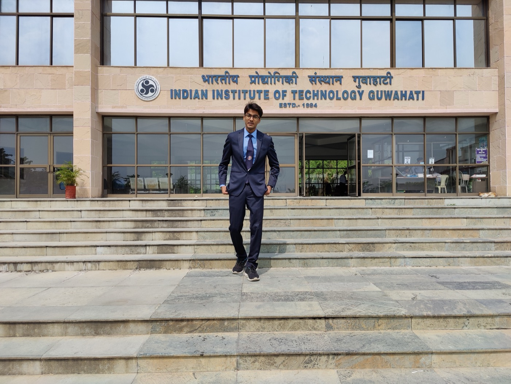

MBA · IIM MUMBAI ’27 / B.TECH · IIT GUWAHATI ’22SCROLL TO PLAY ↓
01 / THE PLAYGROUND
Ideas, out in the wild.
Career tools, music, business, and patterns in everyday life. Nine rabbit holes. Pick a bubble to explore.
A SMALL UNIVERSE OF THINGS I’VE MADE✳
02 / THINKING UNDER PRESSURE
Real business questions. Competitive answers.
Company case briefs. Teamwork. A clock that won’t negotiate. Here’s how that has played out.
NATIONAL WINNER
Tata Consumer Products
Grow Beyond Better 2026
Worked with my team to develop and refine a solution to a company case brief, incorporating TCPL mentors’ feedback ahead of the finale.
14,000+ peers in the competition pool
Problem framing · Strategy · Team collaboration
NATIONAL WINNER
HOCCO Ice Cream
Prachaar 3.0 · Goa Institute of Management
Developed a go-to-market strategy for HOCCO Ice Cream in GIM’s marketing case study competition.
2 national wins across company case competitions
Marketing strategy · Go-to-market thinking
NATIONAL FINALIST
Thoucentric & Xoriant
Bottoms Up 5.0 · AI for Consulting
Placed among the top 15 teams in a competition exploring AI for consulting.
AI × Business problem-solving
CAMPUS FINALIST
Axis Bank
Axis Moves’26
Ranked in the top 5% within a pool of 42,000+ participants.
Competitive case problem-solving
CAMPUS FINALIST
Marico
Over The Wall
Placed in the top 0.6% among 28,000+ registered candidates.
Competitive case problem-solving
Results from case competitions; solutions presented to judges. Participant pools refer to the overall competitions.
03 / WHEN PEOPLE ARE THE PROJECT
Less “someone should.” More “I’ll take it from here.”
Getting people aligned, resources in place, and things over the finish line.
PARTNERSHIPS & CHANGE
Secretary
Marketing Interest Group
Build the backing. Bring people along.
Secured ₹1.2L+ in prizes and sponsorships, 12 live projects, and 3 MoUs through B2B negotiations. Led committee rebranding across its name, logo, structure, and website, driving a 46% rise in intent applications.
Hosted a P&G–Meta UGC workshop, Starbucks and Adobe leadership talks, and an Unstop contest reaching 50K+ views.
ADVOCACY & EXECUTION
Class Representative
IIM Mumbai
Turn “this isn’t working” into a better process.
Drove a shift from pen-and-paper exams to capstone-based evaluation for 150+ peers. Improved scheduling and material sharing across 10 courses by aligning stakeholders and redesigning workflows.
Closed 100+ academic concerns with under-24-hour turnaround through prioritised escalation.
MENTORSHIP & DELIVERY
Project Head
Aero Club · IIT Guwahati
Give good ideas a timeline. And a landing.
Mentored 8 projects involving 45+ students through successful demos at TechEvince, IIT Guwahati’s flagship expo. Established timelines, tracked milestones, and kept deadlines visible.
Balanced budgets and assets to meet project objectives without cost overruns.
04 / THE PERSON BEHIND THE TABS
Business meets “let me build that.”

A campus chapter. Still asking questions. ↗
Could this be easier, clearer, or more interesting?
That’s usually where I start. From making CVs less fiddly and keeping lyrics close to exploring businesses, delivery data, and the patterns in conversations, I build to understand things — and make them a little more useful.
Sometimes that becomes a browser extension. Sometimes it becomes an interactive guide, a dashboard, or a way to listen to what users are saying. I enjoy connecting the business problem with the details of making something work.
I’m currently pursuing my MBA at IIM Mumbai, after studying at IIT Guwahati. This is a growing collection of what I’m learning by making, competing, and bringing people together.
Product thinkingBusiness curiosityLearning by making